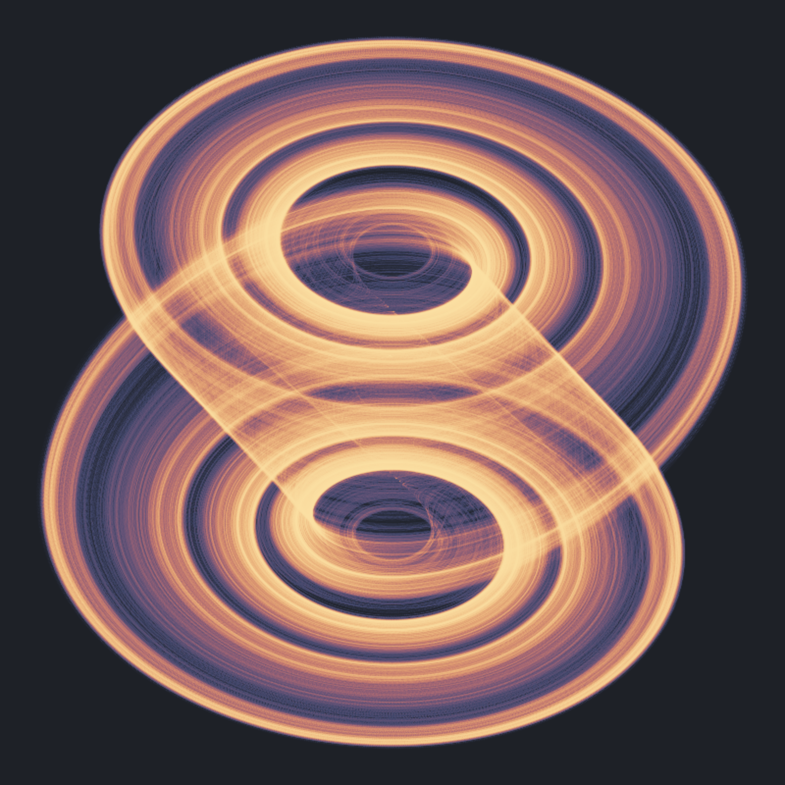

where \(f(x, \gamma, \delta) = \gamma x + (\delta - \gamma) (|x+1| - |x-1|) / 2\).
The picture represents the projection of the chaotic attractor in the \(y-z\) plane, for parameter values \(\alpha = 15.446\), \(\beta = 28\), \(\gamma = -0.714\) and \(\delta = -1.143\).
